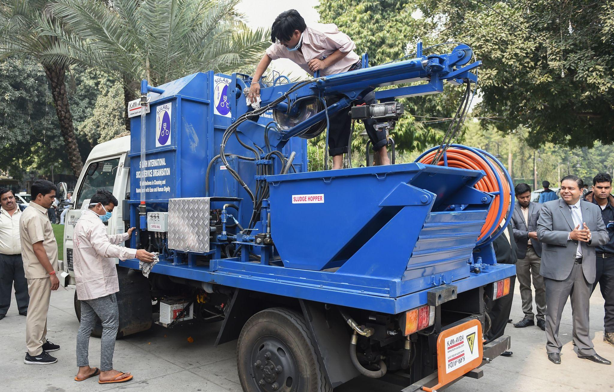
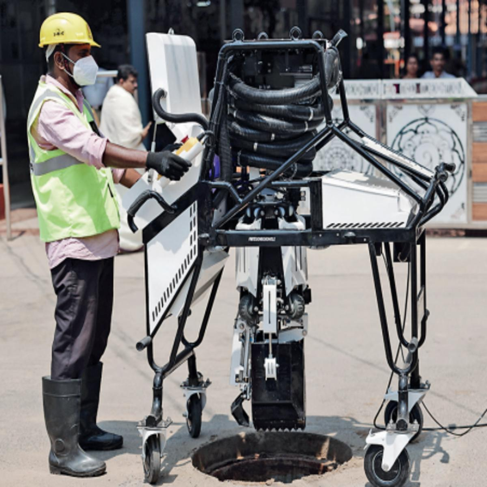
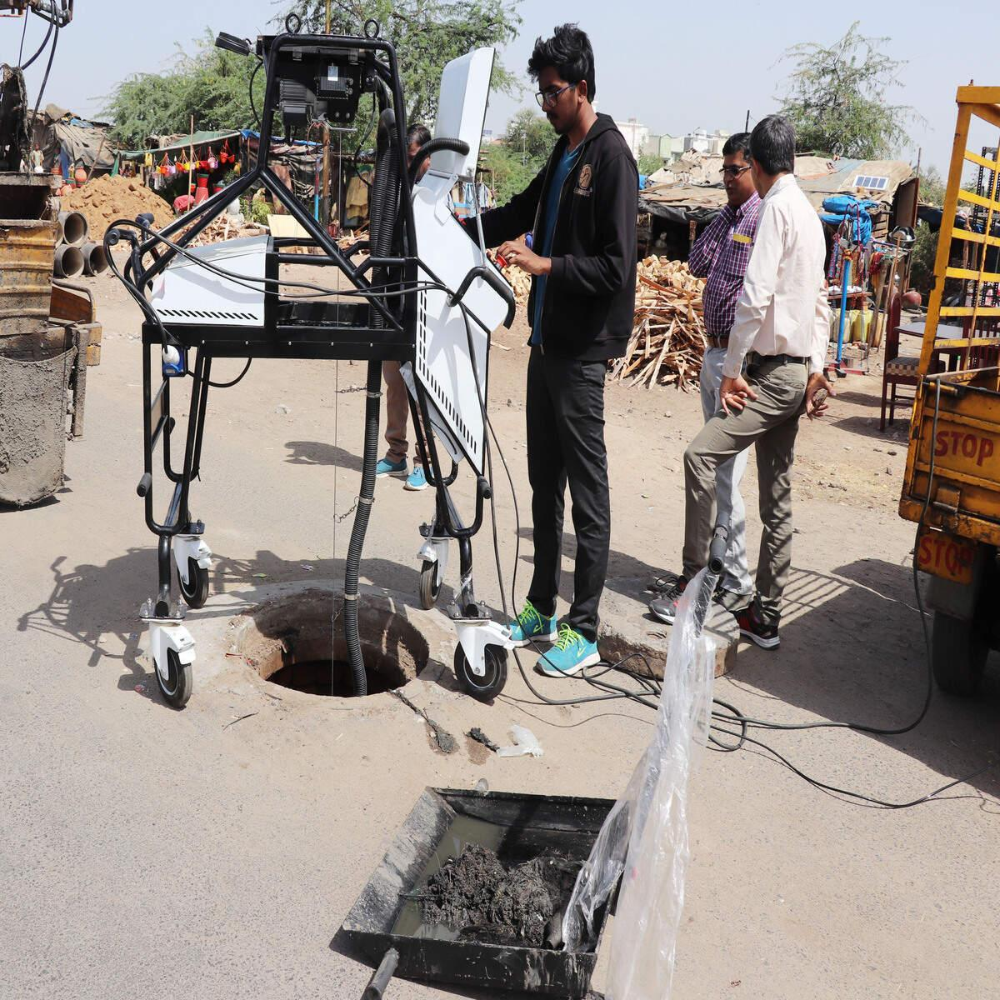

The most surprising fact about this layer is that the machines exist. India does not lack suction trucks, jetting vehicles or sewer robots. It has them in Delhi, Lucknow, Varanasi, Kanpur and Vasai-Virar. In all five, reporters found people still entering drains by hand.
That makes this the most useful test of the exhibit's central claim. If manual scavenging persisted only because the technology was missing, then supplying it would end it. The evidence below suggests something harder to fix: technology is necessary, and it does not by itself decide who goes down.
Since 2013the Act has made technology a duty of every local authority1
200machines launched in Delhi in 2019, each owned by a contractor on a bank loan2
18 for 110machines for wards in Varanasi, two of the biggest out of order in 20233

TOOL 01 / JETTING + SUCTION
Clears blockages and removes sludge using mechanical
equipment. Access and the nature of the blockage matter.

TOOL 02 / ROBOTIC CLEANING
A remotely operated arm and collection system can
perform tasks without a worker entering the manhole.
A duty, not a preference
Section 33 of the 2013 Act is short and easy to miss. It makes every local authority and agency responsible for using appropriate technological appliances to clean sewers and septic tanks so as to end the need for manual handling, and makes the government responsible for promoting that technology through funding, incentives and other means.1 The Supreme Court's 2023 directions pushed the same way. By law, then, "why didn't they just mechanise?" is a question about compliance, not about choice. The sections below test why compliance is patchy.
The machine ladder: what each tool can reach
City agencies deploy a range of machines. Newslaundry's 2023 reporting in Uttar Pradesh sets out what each is rated for, by depth.3
Hand-grabber (narrow lanes)≤ 4 ft
Jetting machine≤ 8 ft
Hydraulic grabber (desilting)7–8 ft
Bandicoot robot≤ 24 ft
Super-suction (jetting + suction)≤ 25 ft
Ratings as reported by Newslaundry; actual performance depends on lane width, silt and access.3
Two observations. First, the cheap, small, lane-friendly machines work only to shallow depths, and the machines that reach deep need road access. Second, neither category removes the need to open the manhole, set hooks or clear obstructions. A sanitation worker in Kanpur told the reporter that even when a machine is called he must go in to fix its hooks or to remove bricks blocking the entry.3 The government's own scheme accepts this implicitly: NAMASTE describes trained workers with safety gear entering only as a last resort, if mechanised equipment cannot do the job.4
OBJECT 01 — POLICY CASE (REPORT)
"200 sewer machines: Is the Delhi Government's fight against manual scavenging working on the ground?"
Veena Nair, Newslaundry, 3 June 2019. Linked, not reproduced.
In February 2019 the Delhi government and the Delhi Jal Board launched a fleet of 200 sewer-cleaning machines. Each machine cost ₹30–32 lakh plus 18 per cent GST, a total of ₹35–40 lakh. Instead of the Board buying them, each was assigned to an individual contractor, who paid 10 per cent of the cost and took the remaining 90 per cent as a five-year loan from the State Bank of India. Priority went first to the families of workers who had died in sewers, then to existing safai karamcharis, then to Scheduled Caste and Scheduled Tribe applicants; the Board's own note listed seven machines for kin of the deceased, 50 for safai karamcharis, 136 for SC/ST applicants and seven for others. A Dalit industry chamber helped recruit and train the contractors, and many of those who took machines were women whose husbands or sons had died in sewers.2
Three tensions sit in this one object. Delivery: three months after launch, a Board engineer said 137 machines had been sanctioned, while workers told the reporter only 77 were running. Debt: the model turned a state obligation into a private loan, and the Delhi High Court asked in the preference case what would happen if repayment became unbearable and whether the project could mirror the farm-debt crisis; the Board assured the court that the government would step in if a major accident or death occurred.2,5Caste: Bezwada Wilson criticised the scheme because it reasserted the link between Dalits and sanitation work, while the Dalit chamber's president defended it, noting that parents once wrote "labourer" on school forms and now write "contractor".2 The Court upheld the preferential allocation.5 The case does not settle whether ownership is liberation or a more modern assignment. It is the best single object for Exhibit 07's question.
Where the machines meet the street
In June 2023 Newslaundry visited Lucknow, Kanpur and Varanasi and found the same gap three ways.3
City
The machine side
What the reporter found
Varanasi
18 machines for 110 wards and an 800 km network, including two super-suckers out of order
About 300 contract labourers cleaning with rods and bamboo; workers said the manual method is the first try and the machine is called last. The general manager said anyone working by hand "must be" a private worker and threatened contractors with jail.
Lucknow
2,643 km of sewers handed to the private operator SUEZ for ten years from 2019; 219 machines including Bandicoot robots; the operator described cleaning as 100 per cent mechanised
Workers desilting with a bucket and rope for ₹300–400 a day, hired by labour contractors who said they had never met the main contractor and did not know of SUEZ.
Kanpur
23 types of machines across 3,290 km of sewers; 145 permanent workers insured for ₹10 lakh and equipped with gear
Informal contract workers on ₹7,000 a month still entering sewers, including to fix machine hooks and remove blockages.
Vasai-Virar adds a fourth variant, from the system layer. The municipal corporation bought ten suction-cum-jetting machines for ₹3.8 crore, about ₹38 lakh each, and five desludging machines, and said a septic-tank visit cost the citizen ₹1,000. Even so, its machines were limited to three northern wards, and sanitation workers said some drains were still cleaned by hand.6 There, cheapness did not prevent deaths in privately hired tanks. Price was not the main thing that decided who got called.
The machine on paper, the worker on the ground
A fleet, an inventory or a mechanisation target does not show
what happens at a particular blockage. This ground report
examines that gap across three Uttar Pradesh cities.
GROUND REPORT / UTTAR PRADESH
Newslaundry documents the gap between mechanisation claims
and workers' reported experiences.
Watch on YouTube ↗
What the numbers say about price
These figures come from different payers and different years. The chart sets them side by side only to give a sense of scale; it is not a cost-benefit analysis.
Machine, Delhi 2019 (₹35–40 lakh)35–40
Machine, Vasai-Virar 2021 (average of 10)38
Compensation owed per sewer death30
Reported ceiling of NAMASTE capital subsidy per vehicle5
One-time cash assistance to an identified scavenger0.4
Sources: Newslaundry 2019; Scroll 2023 (₹3.8 crore for 10 machines); Supreme Court, 2023; a NAMASTE summary as reported by a civil-services study portal; Scroll on the ₹40,000 payment.2,6,7,8
The pattern is that the machine costs about as much as the state is now supposed to pay for a death, while the support for buying one is a fraction of its price. Whether that is a reason machines are scarce is a question the evidence cannot answer on its own. But it does suggest that the purchase decision, in most places, sits with someone who bears the cost of the machine and not the cost of the death.
CAPITAL IS NOT COMPLIANCE
A purchase record establishes that equipment was acquired.
It does not establish that the equipment was working, could
reach the site, was called in time, or prevented human entry.
Those are separate questions requiring operational evidence.
NAMASTE: what the scheme delivers
The ministries launched NAMASTE in July 2023, aiming at zero fatalities in sanitation work, no direct contact with human faecal matter, and every cleaning operation performed through safety devices.4 Outlay was reported at about ₹350 crore over its first phase, with ₹97 crore allocated in 2023-24.3,9 The ministry's progress figures, as summarised by a study portal, show where the scheme's effort has gone.8
Sewer and septic workers profiled90,942
Validated89,248
PPE kits issued87,037
Covered by health insurance76,247
Safety devices to response units753
Mechanised vehicles subsidised364
Counts of different things, not a series. The 364 vehicles were subsidised through ₹34.17 crore released to 983 workers.8
READING THE SCHEME
The scheme is strongest where distribution is easy: profiling, cards, insurance and protective kits. It is thinnest where the machine has to be bought and kept running. That matches the Rules' older emphasis on gear. The ministry told Parliament in August 2025 that about half of urban households, roughly 4.5 crore, use septic tanks, which sets a scale against which 364 subsidised vehicles is a very small number.10 This is not to say gear is wrong. Gas monitors and harnesses save lives. It is to say that safety technology and replacement technology do different jobs, and only the second removes the need for the entry.
The robot: a technology story told by its makers
The best-known Indian innovation here is the Bandicoot, a robotic manhole cleaner from Genrobotics in Kerala. Its manufacturer reports deployments across a growing list of states, a figure that varies between sources and years, and Kerala was reported in 2023 to have become the first state to move fully to robotic manhole cleaning.11 Newslaundry found Bandicoots in use in Lucknow, rated to 24 feet.3

TECHNOLOGY / BANDICOOT
A remotely operated robotic unit designed to inspect and
remove waste from manholes. Manufacturer specifications
describe cameras, gas sensors and a multi-jointed arm.
View manufacturer specifications ↗
OBJECT 02 — PROMOTIONAL CASE STUDY (SOURCE CRITICISM)
"The AI-Powered Robot Can Clean 12 Manholes in 8 Hours"
NITI Aayog Frontier Tech Hub, story page for Bandicoot. Linked, not reproduced.
The page says the robot, built by a Kerala start-up with night vision, gas sensors and a robotic arm, can clean up to 12 manholes in eight hours where a manual crew would need two or more days and 12 or more workers, that more than 3,000 sanitation workers have been trained to operate it, and that 20-plus states and Gulf countries use it. The page also states that it features submissions "as is" and that nothing on it constitutes endorsement or validation by NITI Aayog.12
The headline numbers are a manufacturer's claims on a government-hosted page that disclaims endorsement, so they are evidence of what the company says rather than what independent audits found. Nothing in the available record shows how many of those robots are in daily use, how many manholes are cleaned by robot in a given city, or whether the workers trained to operate them are the same people previously sent into drains. The same page also carries a long block of unattributed "additional research" with highly specific percentages that cannot be traced to a source, and this exhibit does not use it. Treat the object as a lesson in how technology claims travel: confidently, and ahead of the audit.
Five explanations for the lag, tested
Open each card for the exhibit's reading of the evidence. The verdicts are this exhibit's judgements, not findings of any court.
"It costs too much." PARTLY
THE EVIDENCEA machine costs ₹35–40 lakh, comparable to what is now owed per death. Subsidy is a fraction of that, and in Delhi's model the contractor carries the loan.2,8 But Vasai-Virar's septic machine cost the citizen ₹1,000 a visit and deaths still occurred in privately hired tanks.6 Price shapes who buys; it does not alone decide who is called.
"The machines can't reach the problem." PARTLY
THE EVIDENCENarrow lanes, lack of road access and depth limits are real; Varanasi workers say size keeps machines out.3 Delhi's second-generation vehicles are smaller, holding 1,500 litres against 4,000 in the older ones, which shows design can adapt.2
"The machines exist but are not used." SUPPORTED
THE EVIDENCETwo super-suckers out of order in Varanasi; 77 of 137 sanctioned machines running in Delhi three months after launch; machines confined to three wards in Vasai-Virar.2,3,6
"Even with a machine, someone still goes down." SUPPORTED
THE EVIDENCEKanpur workers enter to fix hooks and clear bricks; NAMASTE itself reserves human entry as a last resort.3,4 The legal question of what counts as "last resort" returns to Exhibit 02.
"The contracting chain decides, not the engineer." SUPPORTED
THE EVIDENCELucknow's labour contractors had never met the main contractor, and the operator reported a fully mechanised city; Varanasi's manager said manual workers must be private; Kanpur's manager said the contractors must provide gear.3 Each layer's account is plausible, and together they leave the worker without an employer who owns the decision.
What this layer establishes
Three things. First, technology is available, legally required and increasingly funded, so the absence of a machine is not the main reason people still go down. Second, the barriers sit in procurement, maintenance, access and above all in contracting, which means the same chain Exhibit 03 identified governs whether a machine is used. Third, mechanisation is not caste-neutral: the Delhi model shows that who owns and operates the machine is itself a question of caste, which Exhibit 07 takes up. A machine can replace the entry. It cannot replace the decision about who is responsible for it.
Prohibition of Employment as Manual Scavengers and their Rehabilitation Act, 2013, s.33. legislative.gov.in
Veena Nair, "200 sewer machines: Is the Delhi Government's fight against manual scavenging working on the ground?," Newslaundry, 3 June 2019. newslaundry.com
Pratyush Deep, "No protective gear, a 'compulsion': In top UP cities, machines fail to stop manual scavenging," Newslaundry, 23 June 2023. newslaundry.com
Ministry of Social Justice and Empowerment, NAMASTE scheme page. socialjustice.gov.in · Scheme description incl. last-resort entry: vikaspedia.in
"Delhi HC upholds Jal Board's preference to manual scavengers and their families in tender for mechanised sewer cleaning," LiveLaw. livelaw.in
Aarefa Johari, "What it takes for a city to end manual scavenging," Scroll.in, 6 February 2023. scroll.in
"Manual scavenging has been eliminated, claims Centre," Scroll.in (₹40,000 one-time assistance). scroll.in · Compensation: Dr. Balram Singh v. Union of India, 20 October 2023, indiankanoon.org
NAMASTE progress figures (90,942 profiled; 87,037 PPE kits; ₹34.17 crore subsidy to 983 workers for 364 vehicles; 753 devices to ERSUs) as summarised by EaseMyPrep. easemyprep.in · Reported subsidy ceiling of up to ₹5 lakh per vehicle: anantamias.com(secondary study portals: check against the ministry's own notified rates before submitting)
"National Action for Mechanised Sanitation Ecosystem," summary of the scheme's outlay. officerspulse.com
Lok Sabha Unstarred Question No. 4802, answered 21 August 2025. eparlib.sansad.in
"Kerala becomes first Indian state to fully robotize manhole cleaning," Onmanorama, 25 February 2023. onmanorama.com
NITI Aayog Frontier Tech Hub, "The AI-Powered Robot Can Clean 12 Manholes in 8 Hours" (self-submitted; carries a no-endorsement disclaimer). frontiertech.niti.gov.in